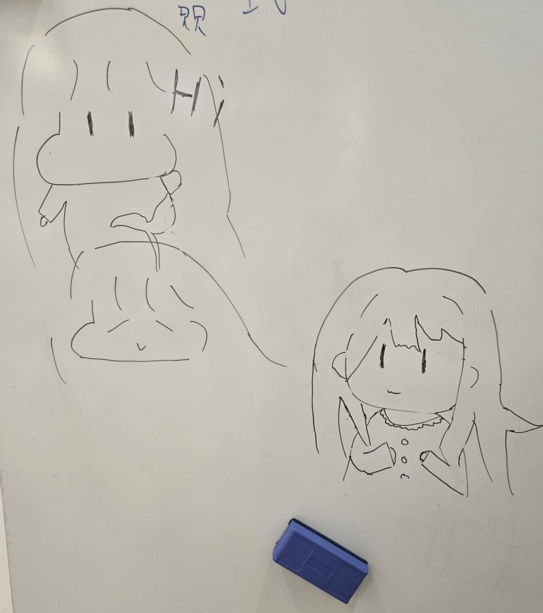

Algebra Atelier
A responsive lesson layout for algebra practice, with clean problem sets and calm visual hierarchy.
Tailwind
HTML
CSS

A polished math teacher website that blends dark academic aesthetic with clear learning tools, lesson resources, and student-friendly visuals.
Math Educator
WikiChan
Creating thoughtful lesson pages, polished classroom resources, and beautiful teaching materials for math learners.
Featured Preview
Explore classroom resources, lesson page concepts, and math education tools built for clarity and student engagement.
A responsive lesson layout for algebra practice, with clean problem sets and calm visual hierarchy.
An illustrated reference page for key geometry terms, designed for student clarity and quick review.
Lesson templates and activity guides with a calm, academic palette and simple classroom flow.
About Me
I design calm, student-centered math resources that support conceptual understanding and classroom confidence. My work blends structure with subtle style so learning feels both polished and approachable.